00이 매뉴얼에 대하여
건축공사 상주감리 대가 산출기는 건축·기계·토목 분야 상주감리원과 비상주 감리원의 기술등급·감리기간을 넣으면 실비정액가산식(직접인건비 + 제경비 + 기술료 + 직접경비)으로 상주감리 대가를 계산하고, A4 산출서로 출력하는 웹 계산도구입니다. 발주 부서 담당자와 건축사사무소 실무자가 화면 순서대로 따라 하며 감리비를 산출할 수 있도록 작성했습니다.
| 항목 | 내용 |
|---|---|
| 대상 프로그램 | 건축공사 상주감리 대가 산출기 MANMIN Ver-5.0 — 탭 막대 「📘 매뉴얼」 버튼으로 이 문서가 열립니다 |
| 접속 주소 | manminkim-eng.github.io/arch-supervision |
| 매뉴얼 판 | Ver-5.0 (화면 표기와 같은 판 번호, 초판) · 2026-10-11 · 작성 김만민 건축사(㈜대성건축사사무소) |
| 내려받기 | PDF(A4) · 상주감리 대가 산출기 열기 |
| 예제 | 본문 그림은 예제 A(만민 건축사 신사옥 신축공사 · 건축·기계·토목 고급기술자 각 6개월 · 비상주 특급기술자 2개월 · 제경비 110% · 기술료 20%)로 캡처 — 프로그램을 처음 열었을 때의 초기값과 같습니다. 합계 386,798,000원(VAT 포함). 입력값은 부록 A1 |
| 근거 기준 | 건축법(2026.2.27. 시행) 제25조 · 건축법 시행령(2026.10.6. 시행) 제19조 · 건축사법(2026.9.18. 시행) 제19조의3·제20조 · 「공공발주사업에 대한 건축사의 업무범위와 대가기준」 국토교통부고시 제2020-635호(2020.9.14. 시행) 제14조·제17조 · 「건축공사 감리세부기준」 국토교통부고시 제2024-377호(2024.7.10. 시행) — 4장 조문은 법령 원문(LawMCP, 2026-10-11 조회)으로 대조 |
| 읽는 순서 | 처음이면 1장 → 2장(따라하기) → 필요할 때 3장(화면별 상세). 감리비 산출·계약 전에는 4장(기술기준)·5장(작업 방법) |
01한눈에 보기
설치 없이 브라우저에서 바로 실행되는 단일 페이지 앱(PWA)입니다. 입력은 내 PC 브라우저 안에서만 처리되며 서버로 전송되지 않습니다.
무엇을 계산하나
상주감리원 3분야(건축·기계·토목)와 비상주 감리원 1인의 직접인건비, 제경비, 기술료, 공급가액, 부가가치세, 합계
자동으로 정해지는 값
개월 수 → 인일수(1개월 = 22인일), 등급별 노임단가, 요율별 제경비·기술료, 천원 미만 버림
근거
건축법 시행령 제19조제5항 · 대가기준 제14조제2항·제17조 (국토교통부고시 제2020-635호(2020.9.14. 시행))
출력
A4 상주감리 대가 산출서 — 비목별 금액과 감리원별 내역(인쇄·PDF·JPG)
1-1. 화면 구성
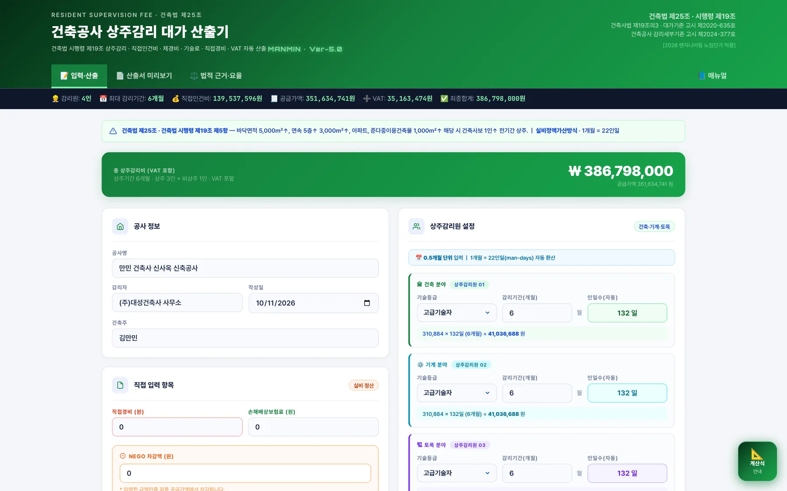
1234567- 1작업 탭: 입력·산출 · 산출서 미리보기 · 법적 근거·요율 · 매뉴얼
- 2요약 스트립: 감리원 수·최대 감리기간·직접인건비·공급가액·VAT·최종합계가 입력할 때마다 갱신
- 3안내 띠: 상주감리 대상(건축법 시행령 제19조제5항)과 환산 기준
- 4총액 배너: 총 상주감리비와 공급가액
- 5공사 정보: 공사명·감리자·작성일·건축주 — A4 산출서 표제로 들어감
- 6상주감리원 설정: 분야별 기술등급·감리기간
- 7오른쪽 버튼: 「계산식 안내」 창 열기
| 탭 | 하는 일 | 본문 |
|---|---|---|
| 📝 입력·산출 | 공사 정보, 실비·NEGO, 요율, 상주·비상주 감리원 입력과 실시간 결과 | 3-1~3-7 |
| 📄 산출서 미리보기 | A4 상주감리 대가 산출서 미리보기 · 인쇄/PDF · JPG 저장 | 3-8~3-9 |
| ⚖️ 법적 근거·요율 | 노임단가 · 법정 요율 범위 · 상주감리 대상 건축물 · 행정 절차 체크리스트 | 3-10 |
| 📘 매뉴얼 | 이 매뉴얼을 새 창으로 엽니다(인터넷 연결 필요) | 1-3 |
1-2. 작업 탭·근거 표시
- 1입력·산출
- 2산출서 미리보기
- 3법적 근거·요율
- 4📘 매뉴얼 — 이 매뉴얼을 새 창으로(탭 막대 오른쪽 끝)
- 5근거 법령·고시 표시
헤더 오른쪽에는 근거 법령과 고시가 적혀 있습니다. 법령·고시나 노임단가가 바뀌면 이 표시와 4장 내용을 함께 확인하십시오.
1-3. 설치·보관·매뉴얼
| 항목 | 내용 |
|---|---|
| 설치(선택) | 크롬·엣지 주소창의 설치 아이콘 또는 화면 아래 설치 안내를 누르면 홈 화면·바탕화면에 앱으로 설치됩니다. 아이폰은 사파리 공유 버튼 → 「홈 화면에 추가」 |
| 오프라인 | 한 번 연 뒤에는 인터넷이 끊겨도 계산·출력이 됩니다. 매뉴얼은 인터넷에 연결되어 있을 때만 열립니다 |
| 입력값 보관 | 입력값은 저장되지 않습니다. 창을 닫거나 새로 고치면 초기값으로 돌아가므로, 결과는 산출서(PDF·JPG)로 남기십시오 |
| 업데이트 | 새 버전이 올라오면 다음 접속 때 자동으로 바뀝니다. 화면이 예전 그대로면 새로 고침(Ctrl+F5) |
023분 따라하기
예제 A(초기값)로 6단계를 따라 하면 합계 386,798,000원이 나옵니다. 계산 버튼은 없습니다. 값을 바꾸는 즉시 결과가 바뀝니다.
- 공사 정보 입력「공사 정보」 카드에 공사명·감리자·건축주를 적고 작성일을 고릅니다. 이 값이 산출서 표제와 서명란에 들어갑니다(3-1).
- 상주감리원 등급·기간「상주감리원 설정」에서 건축·기계·토목 분야마다 기술등급과 감리기간(개월)을 넣습니다. 예제는 세 분야 모두 고급기술자 6개월 — 분야마다 132인일, 41,036,688원(3-2).
- 비상주 감리원「비상주감리원 설정」에서 등급과 기간을 넣거나 「미투입」을 고릅니다. 예제는 특급기술자 2개월 — 44인일, 16,427,532원(3-3).
- 요율·실비 → 총액 확인「산출 요율 설정」에서 제경비율(110~120%)과 기술료율(20~40%)을 정하고, 「직접 입력 항목」에 직접경비·손해배상보험료·NEGO 차감액을 넣습니다. 예제는 110% · 20% · 실비 0원. 총액 배너에 ₩ 386,798,000, 공급가액 351,634,741원이 표시됩니다(3-4~3-6).
- 산출서 확인「📄 산출서 미리보기」 탭에서 비목별 금액과 감리원별 내역을 확인합니다(3-9).
- 인쇄·저장「인쇄 / PDF 저장」 또는 「JPG 저장」으로 산출서를 남깁니다(3-8).
| 비목 | 예제 A 계산 | 금액(원) |
|---|---|---|
| ① 직접인건비 | 310,884 × 132일 × 3분야 + 373,353 × 44일 | 139,537,596 |
| ② 제경비 | ① × 110% | 153,491,355 |
| ③ 기술료 | (① + ②) × 20% | 58,605,790 |
| ④ 직접경비 · ⑤ 손해배상보험료 · ⑥ 협의 조정액 | 예제는 모두 0 | 0 |
| 공급가액 | ① + ② + ③ + ④ + ⑤ − ⑥ | 351,634,741 |
| 부가가치세 | 공급가액 × 10% | 35,163,474 |
| 합계 | 천원 미만 버림 | 386,798,000 |
03화면별 기능 상세
입력·산출 탭의 카드 순서(왼쪽 열 → 오른쪽 열)와 나머지 탭 순서로 설명합니다.
3-1. 공사 정보
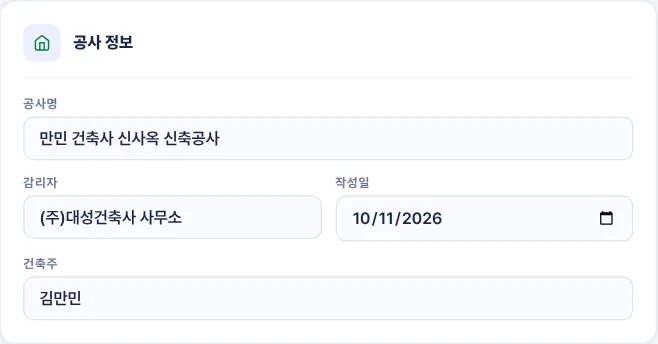
1234- 1공사명 — 산출서 「공 사 명」
- 2감리자 — 산출서 「감 리 자」와 서명란
- 3작성일 — 산출서 날짜(달력에서 선택)
- 4건축주 — 산출서 「건 축 주」
- 네 칸 모두 금액에는 영향을 주지 않고 산출서에만 들어갑니다.
- 작성일은 처음 열 때 오늘 날짜로 채워집니다.
3-2. 상주감리원 설정
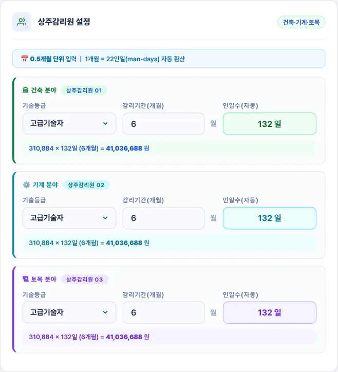
1234567- 1기간 입력 안내 — 0.5개월 단위, 1개월 = 22인일 자동 환산
- 2기술등급 — 기술사/건축사 · 특급 · 고급 · 중급 · 초급기술자
- 3감리기간(개월) — 소수 입력 가능(예 4.5)
- 4인일수(자동) — 개월 × 22를 반올림
- 5분야별 인건비 — 노임단가 × 인일수
- 6기계 분야 상주감리원
- 7토목 분야 상주감리원
- 세 분야가 같은 방식으로 계산됩니다. 배치하지 않는 분야는 감리기간을 0으로 두면 금액이 0원이 됩니다.
- 건축 분야 건축사보는 전체 공사기간, 토목·전기·기계 분야 건축사보는 각 분야의 해당 공사기간 동안 배치합니다(건축법 시행령(2026.10.6. 시행) 제19조제5항). 분야마다 기간이 다르면 공정표의 해당 공사기간을 넣습니다.
- 세 분야 모두 엔지니어링 노임단가 건설 부문 단가를 씁니다. 다른 부문 단가를 써야 하는 계약이면 이 프로그램의 금액과 다릅니다(4-6).
- 전기 분야 입력 칸은 없습니다(4-9).
3-3. 비상주감리원 설정
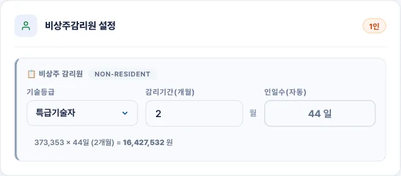
1234- 1기술등급 — 「미투입」 포함 6가지
- 2감리기간(개월)
- 3인일수(자동)
- 4비상주 인건비 — 노임단가 × 인일수
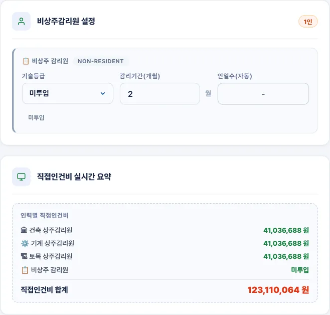
123- 1기술등급에서 「미투입」 선택
- 2계산 줄에 「미투입」 표시
- 3요약의 비상주 감리원 — 「미투입」
- 비상주 감리원은 공사현장에 상주하지 않고 수시로 또는 필요할 때 감리업무를 수행하는 인력(예: 공사감리자인 건축사)의 투입분입니다. 계약에서 정한 투입 기간을 개월로 넣습니다.
- 「미투입」이면 비상주 인건비는 0원이고, 산출서의 비상주 행은 「미투입」으로 표시됩니다. 예제 A에서 미투입으로 바꾸면 합계는 341,261,000원입니다.
3-4. 산출 요율 설정
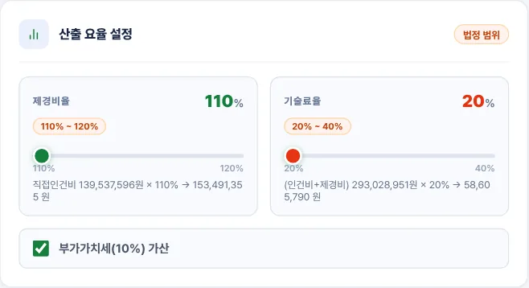
12345- 1제경비율 슬라이더 — 110~120%, 1% 단위
- 2제경비 계산 — 직접인건비 × 제경비율
- 3기술료율 슬라이더 — 20~40%, 1% 단위
- 4기술료 계산 — (직접인건비 + 제경비) × 기술료율
- 5부가가치세(10%) 가산 — 끄면 공급가액이 합계가 됨
- 범위는 대가기준 제17조제2호(제경비: 직접인건비의 110%부터 120%까지)와 제3호(창작 및 기술료: 직접인건비에 제경비를 합한 금액의 20%부터 40%까지)에 맞춰 있습니다.
- 제경비와 기술료는 각각 원 미만을 버립니다.
3-5. 직접 입력 항목
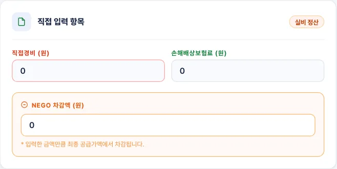
123- 1직접경비(원) — 실제 소요 비용
- 2손해배상보험료(원)
- 3NEGO 차감액(원) — 공급가액에서 빼는 협의 조정액
| 칸 | 무엇을 넣나 | 계산 |
|---|---|---|
| 직접경비 | 여비, 특수자료비, 제출도서 인쇄·청사진비, 관계 전문기술자 자문비·위탁비, 현장 운영경비 등의 실제 소요비용(대가기준 제17조제1호나목) | 공급가액에 더함 |
| 손해배상보험료 | 건축사의 손해배상책임 보험·공제 가입 비용. 공공 발주자는 이 비용을 용역비용에 계상(건축사법(2026.9.18. 시행) 제20조제3항) | 공급가액에 더함 |
| NEGO 차감액 | 계약 협의로 줄이는 금액. 근거 규정이 있는 비목이 아니라 당사자 협의 결과를 반영하는 칸 | 공급가액에서 뺌 |
세 칸 모두 숫자만 넣으면 천 단위 쉼표가 자동으로 붙습니다. 직접경비와 손해배상보험료에는 제경비·기술료가 붙지 않습니다.
3-6. 요약 스트립·총액 배너
- 1요약 스트립 — 어느 탭에서나 보임
- 2안내 띠 — 상주감리 대상과 환산 기준
- 3상주기간(세 분야 중 가장 긴 기간) · 인원 · VAT 포함 여부
- 4최종 합계(천원 미만 버림)
- 5공급가액(VAT 제외)
요약 스트립의 「최대 감리기간」과 배너의 「상주기간」은 건축·기계·토목 감리기간 가운데 가장 긴 값입니다. 산출서의 「감리기간」에도 이 값이 들어갑니다.
3-7. 직접인건비 실시간 요약
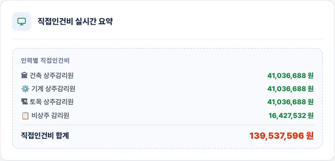
12345- 1건축 상주감리원
- 2기계 상주감리원
- 3토목 상주감리원
- 4비상주 감리원
- 5직접인건비 합계 — 제경비·기술료의 계산 기준
3-8. 산출서 미리보기·출력
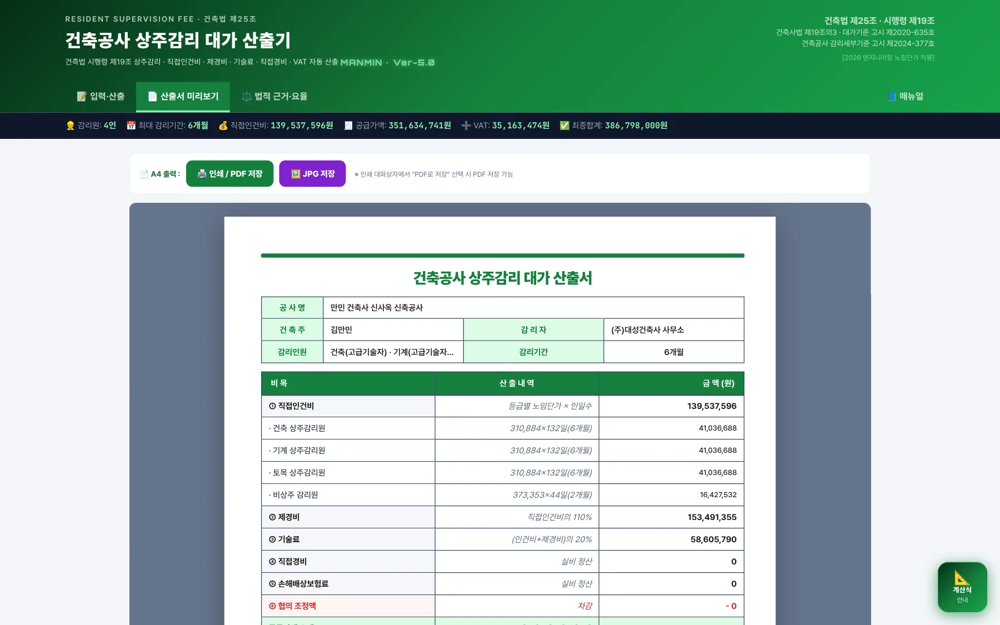
123- 1「인쇄 / PDF 저장」 — 인쇄 창에서 대상 프린터를 「PDF로 저장」으로 고르면 PDF
- 2「JPG 저장」 — A4 한 장 그림 파일
- 3A4 상주감리 대가 산출서 미리보기
- 산출서는 A4 1매입니다. 미리보기는 화면 폭에 맞춰 줄어들 뿐 인쇄 결과는 같습니다.
- JPG 파일 이름은
상주감리_대가산출서_MANMIN-Ver5.0_날짜_시각형식입니다.
3-9. A4 산출서 구성
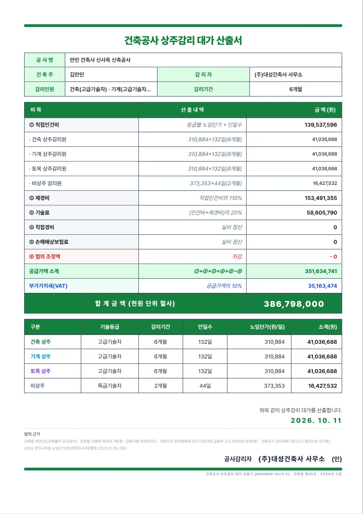
12345678- 1공사 개요 — 공사명·건축주·감리자·감리인원·감리기간
- 2① 직접인건비와 감리원별 세부
- 3② 제경비 · ③ 기술료
- 4공급가액 소계 — ①+②+③+④+⑤−⑥
- 5합계 금액(천원 단위 절사)
- 6감리원별 내역 — 등급·기간·인일수·노임단가·소계
- 7법적 근거
- 8공사감리자 서명란
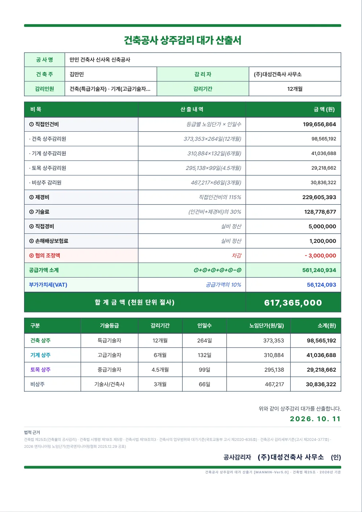
예제 B는 분야마다 등급과 기간이 다르고 실비와 협의 조정액이 있는 경우입니다. 입력값과 계산은 5-3.
3-10. 법적 근거·요율 탭
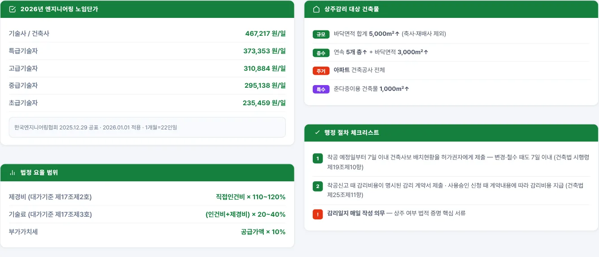
1234- 12026년 엔지니어링 노임단가 — 등급별 1일 단가
- 2법정 요율 범위 — 제경비·기술료·부가가치세
- 3상주감리 대상 건축물 — 건축법 시행령 제19조제5항 각 호
- 4행정 절차 체크리스트 — 배치현황 제출·감리 계약서·감리일지
3-11. 계산식 안내 창
오른쪽 「계산식 안내」 버튼을 누르면 열립니다. 탭 5개로 이용방법과 계산식, 노임단가를 볼 수 있습니다. 닫을 때는 ✕ 또는 창 바깥을 누릅니다.
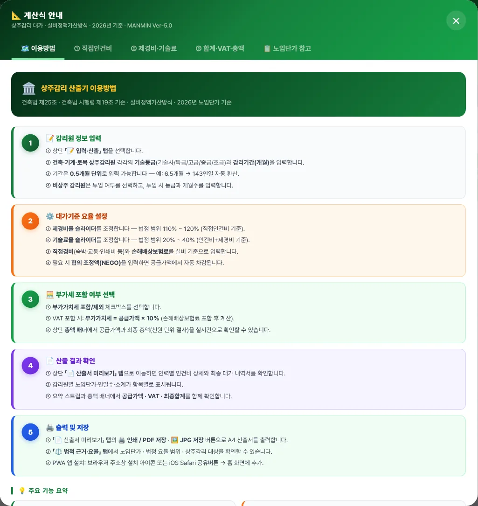
12345- 1이용방법 — 5단계 사용 순서
- 2① 직접인건비 — 공식과 인일수 환산
- 3② 제경비·기술료 — 요율 범위
- 4③ 합계·VAT·총액 — 공급가액 구조
- 5노임단가 참고 — 등급별 단가와 적용 법령
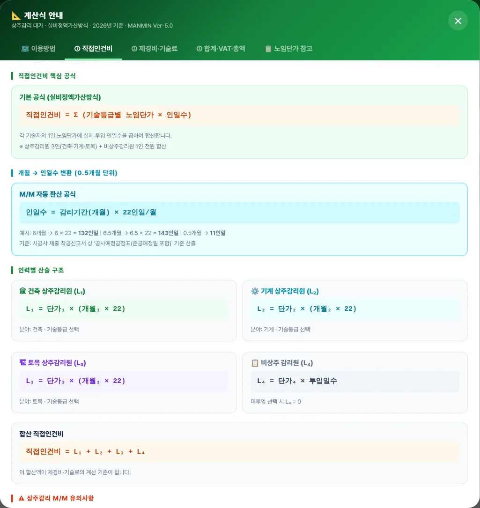
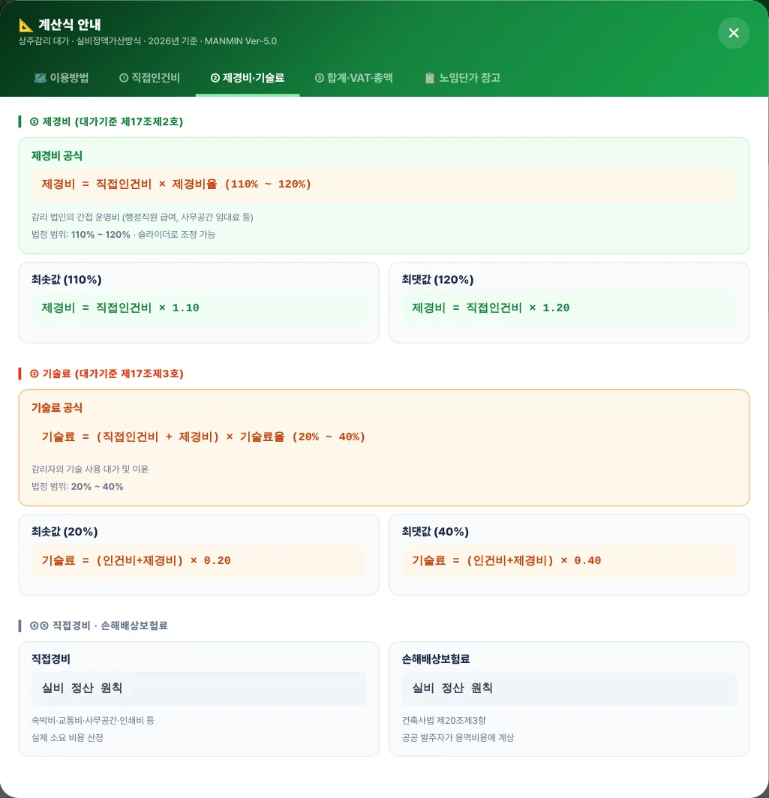
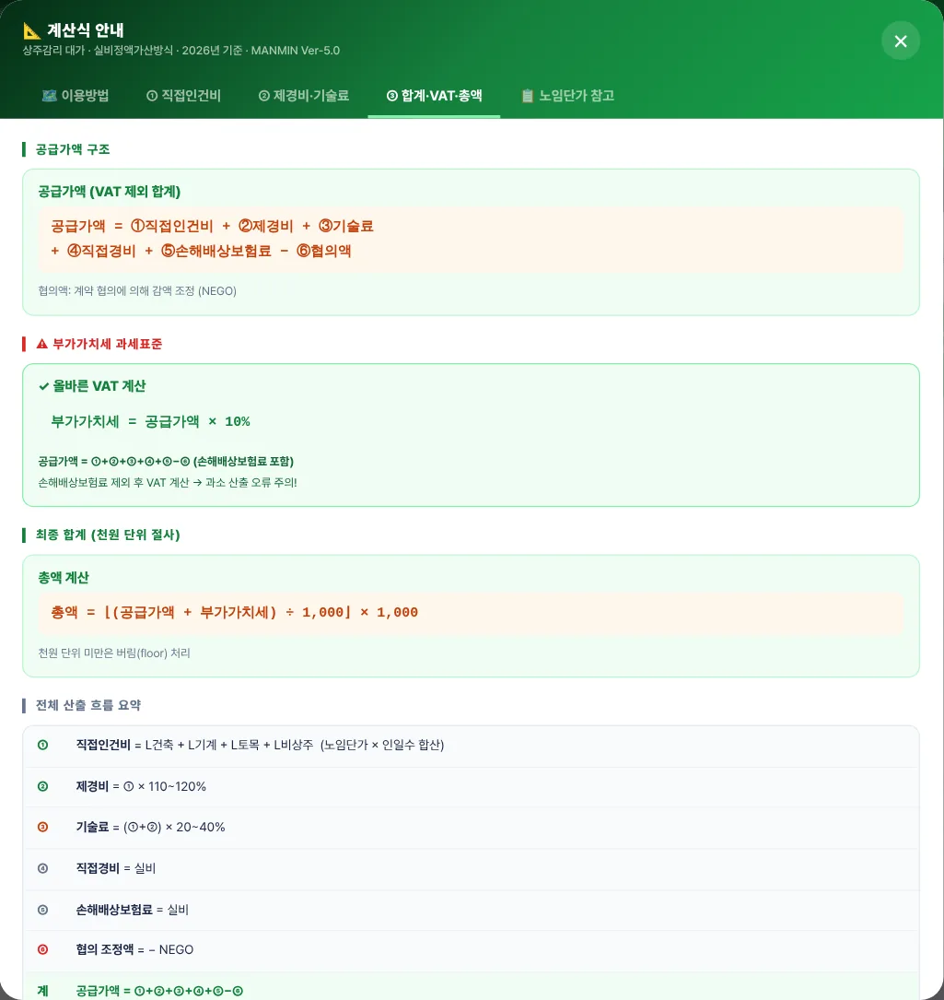
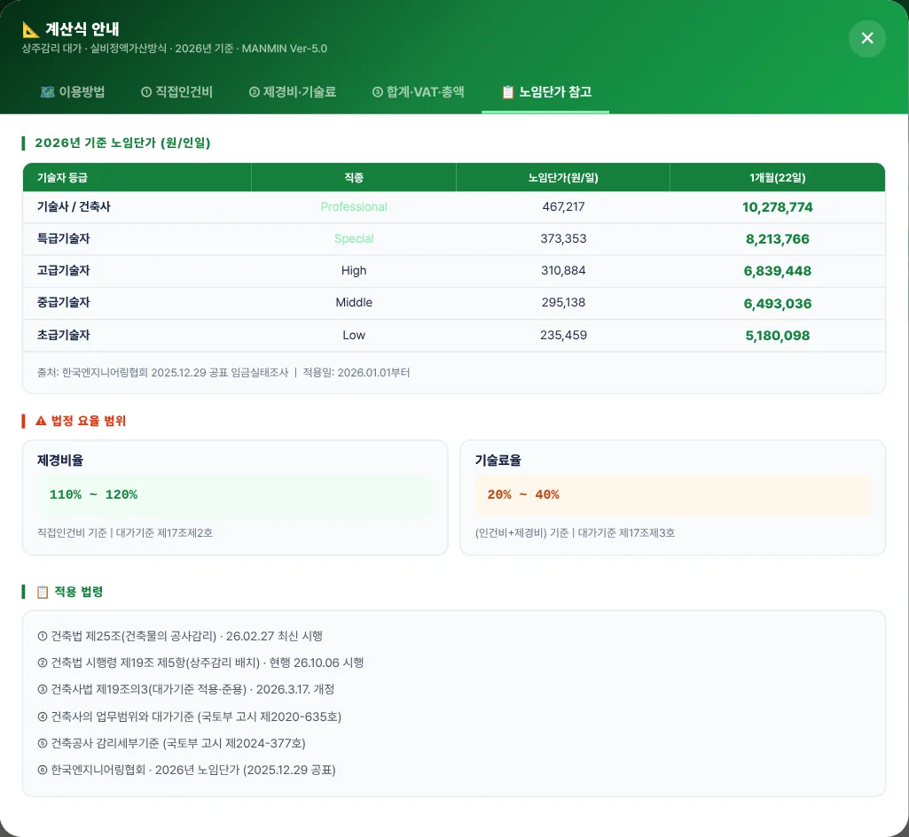
3-12. 모바일
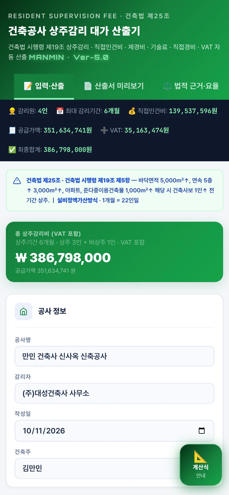
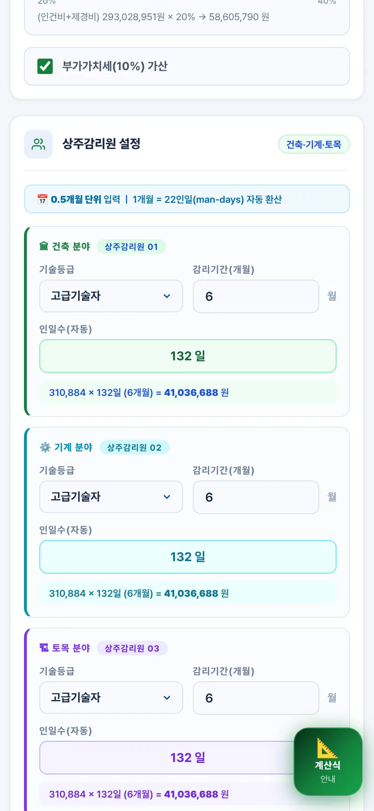
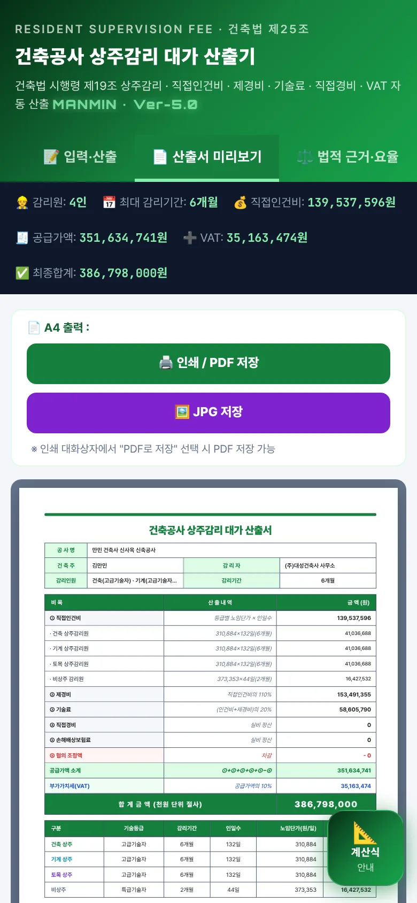
- 휴대폰에서는 카드가 한 줄로 쌓입니다. 탭 막대는 좌우로 밀 수 있으며, 「📘 매뉴얼」은 오른쪽 끝에 있습니다.
- 산출서는 화면 폭에 맞춰 축소되어 보이고, 저장한 PDF·JPG는 A4 크기 그대로입니다.
04기술기준 해설
조문은 법령 원문(LawMCP, 2026-10-11 조회)을 옮긴 것입니다. 각 표의 「프로그램」 칸은 그 조문이 화면에서 어떻게 반영되는지를 적었습니다.
4-1. 공사감리와 상주감리
| 근거 | 내용 |
|---|---|
| 건축법 제25조제1항 | 건축주는 대통령령으로 정하는 용도·규모 및 구조의 건축물을 건축하는 경우 건축사나 대통령령으로 정하는 자를 공사감리자로 지정하여 공사감리를 하게 하여야 한다 |
| 건축법 제25조제8항·제9항 | 공사감리의 방법 및 범위 등은 건축물의 용도·규모 등에 따라 대통령령으로 정하되, 세부기준이 필요한 경우 국토교통부장관이 정하거나 건축사협회로 하여금 승인을 받아 정하도록 할 수 있고, 이를 고시한다 |
| 감리세부기준 — 비상주감리 | 공사감리자가 수시로 또는 필요할 때 시공과정에서 건축 공사현장을 방문하여 확인하는 행위 |
| 감리세부기준 — 상주감리 | 건축분야의 건축사보 한 명 이상을 전체 공사기간 동안 배치하여 건축 공사의 품질관리·공사관리 및 안전관리 등에 대한 기술지도를 하는 행위 |
| 감리세부기준 — 책임상주감리 | 다중이용 건축물에 대하여 건설기술 진흥법에 따른 건설기술용역업자 등을 전체 공사기간 동안 배치하여 기술지도를 하며, 건축주의 권한을 대행하는 감독업무를 하는 행위 |
근거: 건축법(2026.2.27. 시행) · 「건축공사 감리세부기준」 국토교통부고시 제2024-377호(2024.7.10. 시행). 이 프로그램은 위 구분 가운데 상주감리의 대가를 계산합니다.
4-2. 상주감리 대상 건축공사
건축법 시행령(2026.10.6. 시행) 제19조제5항 — 다음 각 호의 건축공사를 감리하는 경우에는 건축사보 중 건축 분야의 건축사보 한 명 이상을 전체 공사기간 동안, 토목·전기 또는 기계 분야의 건축사보 한 명 이상을 각 분야별 해당 공사기간 동안 각각 공사현장에서 감리업무를 수행하게 해야 합니다.
| 제19조제5항 | 대상 | 화면 표시 |
|---|---|---|
| 제1호 | 바닥면적의 합계가 5천 제곱미터 이상인 건축공사. 다만, 축사 또는 작물 재배사의 건축공사는 제외 | 규모 |
| 제2호 | 연속된 5개 층(지하층을 포함한다) 이상으로서 바닥면적의 합계가 3천 제곱미터 이상인 건축공사 | 층수 |
| 제3호 | 아파트 건축공사 | 주거 |
| 제4호 | 준다중이용 건축물 건축공사 | 특수 |
| 항목 | 내용 |
|---|---|
| 준다중이용 건축물(시행령 제2조제17호의2) | 다중이용 건축물 외의 건축물로서 문화 및 집회시설(동물원 및 식물원 제외) · 종교시설 · 판매시설 · 운수시설 중 여객용 시설 · 의료시설 중 종합병원 · 교육연구시설 · 노유자시설 · 운동시설 · 숙박시설 중 관광숙박시설 · 위락시설 · 관광 휴게시설 · 장례시설의 용도로 쓰는 바닥면적의 합계가 1천제곱미터 이상인 건축물 |
| 건축사보의 경력(제19조제5항 후단) | 해당 분야의 건축공사의 설계·시공·시험·검사·공사감독 또는 감리업무 등에 2년 이상 종사한 경력이 있는 사람 |
| 굴착·옹벽 공사(제19조제6항) | 제5항 각 호에 해당하지 않는 건축공사로서 깊이 10미터 이상의 토지 굴착공사 또는 높이 5미터 이상의 옹벽 등의 공사를 감리하는 경우 건축 또는 토목 분야의 건축사보 한 명 이상을 해당 공사기간 동안 배치(산업단지의 바닥면적 합계 2천제곱미터 이하 공장은 제외) |
| 마감재료 설치공사(제19조제7항) | 제61조제1항제4호에 해당하는 건축물의 마감재료 설치공사로서 국토교통부령으로 정하는 경우 건축 또는 안전관리 분야의 건축사보 한 명 이상을 마감재료 설치공사기간 동안 배치 |
| 이중 배치 금지(제19조제8항) | 다른 공사현장이나 공정의 감리업무를 수행하고 있지 않는 건축사보가 감리업무를 수행하게 해야 함 |
4-3. 건축사보 배치와 신고
| 근거 | 내용 |
|---|---|
| 건축법 시행령 제19조제10항 | 공사현장에 건축사보를 두는 공사감리자는 건축사보의 배치현황을 허가권자에게 제출 — 최초 배치는 착공 예정일부터 7일, 배치 변경은 변경된 날부터 7일, 철수는 철수한 날부터 7일 |
| 건축법 시행규칙 제19조의2제2항 | 배치현황은 전자정보시스템으로 제출하며 별지 제22호의2서식에 예정공정표(건축주의 확인을 받은 것) 및 분야별 건축사보 배치계획, 건축사보의 경력·자격 및 소속을 증명하는 서류를 첨부 |
| 건축법 제25조제6항 · 시행규칙 제19조제3항 | 공사감리자는 감리일지를 기록·유지 — 공사감리일지는 별지 제21호서식 |
| 건축법 시행규칙 제19조제5항 | 허가권자는 공사감리일지에 서명·날인한 감리원과 건축사보 배치현황이 일치하는지 확인 |
| 건축법 제25조제11항 | 건축주는 착공신고를 하는 때에 감리비용이 명시된 감리 계약서를 허가권자에게 제출하고, 사용승인을 신청하는 때에는 감리용역 계약내용에 따라 감리비용을 지급. 허가권자는 감리비용이 지급되었는지를 확인한 후 사용승인 |
근거: 건축법(2026.2.27. 시행) · 건축법 시행령(2026.10.6. 시행) · 건축법 시행규칙(2026.2.27. 시행). 산출서의 감리원 수·기간은 배치계획(예정공정표)과 같아야 합니다.
4-4. 대가 산정 방식
| 근거 | 내용 |
|---|---|
| 건축사법 제19조의3제1항 | 국가, 지방자치단체, 공공기관, 그 밖에 대통령령으로 정하는 기관 또는 단체는 건축사의 업무에 대하여 고시한 대가 기준을 적용하여 발주하여야 한다 |
| 건축사법 제19조의3제2항 | 제1항 각 호에 해당하지 아니하는 자는 고시한 대가 기준을 준용할 수 있다 |
| 대가기준 제5조제2호 | 공사감리업무 — 가. 수시 또는 필요한 때 공사현장에서 수행하는 감리업무 / 나. 건축법 시행령 제19조제5항 각 호의 규정에 따라 건축사보로 하여금 공사기간동안 공사현장에서 수행하는 감리업무 / 다. 다중이용건축물, 아파트 및 기타 건축물로서 발주자의 요청으로 수행하는 감리업무 / 라. 발주자의 요청이 있을 경우의 업무(사후관리 매뉴얼 작성, 사후평가) |
| 대가기준 제14조제1항 | 제5조제2호 가목의 건축공사감리업무 대가는 별표5를 적용하여 산정 |
| 대가기준 제14조제2항 | 제5조제2호 나목부터 라목까지의 공사감리업무의 대가는 제17조에 따른 실비정액가산식에 따라서 산정 |
| 대가기준 제8조제1항제3호 | 부가가치세는 부가가치세법에서 정하는 바에 따라 계상 |
근거: 건축사법(2026.9.18. 시행) · 「공공발주사업에 대한 건축사의 업무범위와 대가기준」 국토교통부고시 제2020-635호(2020.9.14. 시행). 상주감리(제5조제2호 나목)는 공사비요율(별표5)이 아니라 실비정액가산식으로 산정합니다. 별표5 요율 방식의 감리 대가는 공공기관 건축사 업무대가 산출기로 계산합니다.
4-5. 실비정액가산식
| 제17조 | 내용 | 프로그램 |
|---|---|---|
| 직접인건비(제1호가목) | 당해업무에 직접 종사하는 건축사등의 인건비로서 투입된 인원수에 노임단가를 곱하여 계산. 노임단가는 한국엔지니어링진흥협회가 통계법에 따라서 조사·공표한 가격으로 하되, 건축사 및 건축사보의 노임단가는 기술사 및 기술자의 노임단가에 준한다 | 등급별 단가 × 인일수 |
| 직접경비(제1호나목) | 당해업무 수행에 필요한 여비(발주자의 여비는 제외), 특수자료비, 제출도서의 인쇄 및 청사진비, 관계 전문기술자에 대한 자문비 또는 위탁비와 현장 운영경비(직접인건비에 포함되지 아니한 보조요원의 급여와 현장사무실의 운영비) 등으로서 그 실제 소요비용 | 「직접경비」 칸 |
| 제경비(제2호) | 직접비에 포함되지 아니하는 간접비로서 임원, 서무, 경리직원 등의 급여, 사무실비, 사무용 소모품비, 비품비, 통신운반비, 회의비, 공과금, 운영활동비용 등을 포함하며 직접인건비의 110%부터 120%까지로 계산 | 제경비율 슬라이더 |
| 창작 및 기술료(제3호) | 종합기획 및 창작, 건축사가 개발·보유한 기술의 사용 및 기술축적을 위한 대가로서 조사연구비, 기술개발비, 기술훈련비 및 이윤 등을 포함하며 직접인건비에 제경비를 합한 금액의 20%부터 40%까지 | 기술료율 슬라이더(화면 표기 「기술료」) |
4-6. 노임단가와 인일수
| 기술등급 | 노임단가(원/일) | 1개월 = 22인일(원) |
|---|---|---|
| 기술사 / 건축사 | 467,217 | 10,278,774 |
| 특급기술자 | 373,353 | 8,213,766 |
| 고급기술자 | 310,884 | 6,839,448 |
| 중급기술자 | 295,138 | 6,493,036 |
| 초급기술자 | 235,459 | 5,180,098 |
- 프로그램에 든 단가는 한국엔지니어링협회가 공표한 엔지니어링기술자 노임단가 가운데 건설 부문 · 2026.1.1. 적용 값입니다. 건축·기계·토목 세 분야에 같은 단가를 씁니다.
- 노임단가는 해마다 새로 공표됩니다. 적용 연도가 바뀌면 프로그램의 단가도 바뀌어야 하므로, 산출 전에 「법적 근거·요율」 탭의 연도 표기를 확인하십시오.
- 「1개월 = 22인일」은 프로그램의 환산 기준입니다. 건축사 대가기준과 엔지니어링사업대가의 기준 고시 본문에는 월 근무일수 규정이 없으므로, 계약에서 월 투입 일수를 다르게 정했다면 개월 수를 조정해 넣습니다(예: 월 20일 × 6개월 = 120일 → 120 ÷ 22 = 5.45개월은 넣을 수 없으므로 5.5개월 = 121일로 근사).
- 인일수는 개월 × 22를 반올림한 정수입니다. 0.5개월은 11일입니다.
4-7. 손해배상보험료·부가가치세
| 근거 | 내용 |
|---|---|
| 건축사법 제20조제2항 | 건축사가 업무를 수행할 때 고의 또는 과실로 건축주에게 재산상의 손해를 입힌 경우에는 그 손해를 배상할 책임이 있다 |
| 건축사법 제20조제3항 | 건축사는 손해배상책임을 보장하기 위하여 보험 또는 공제에 가입하여야 한다. 이 경우 제19조의3제1항 각 호의 어느 하나에 해당하는 자는 보험 또는 공제 가입에 따른 비용을 용역비용에 계상하여야 한다 |
| 대가기준 제8조제1항제3호 | 부가가치세는 부가가치세법에서 정하는 바에 따라 계상 |
프로그램은 손해배상보험료를 공급가액에 넣은 뒤 부가가치세(공급가액 × 10%)를 계산합니다.
4-8. 프로그램의 계산 순서
4-9. 프로그램이 다루지 않는 것
| 항목 | 내용 | 프로그램 |
|---|---|---|
| 다중이용 건축물 | 공사감리자를 지정하는 경우 감리원의 배치기준 및 감리대가는 건설기술 진흥법에서 정하는 바에 따름(건축법 시행령 제19조제2항) | 대상 아님 |
| 주택법 사업계획 승인 대상 · 건설사업관리 대상 | 공사감리는 각각 해당 법령으로 정하는 바에 따름(건축법 제25조제10항) | 대상 아님 |
| 허가권자 지정 감리 | 허가권자가 공사감리자를 지정하는 경우의 감리비용에 관한 기준은 해당 지방자치단체의 조례로 정할 수 있음(건축법 제25조제14항) | 조례 확인 |
| 전기 분야 건축사보 | 시행령 제19조제5항은 토목·전기 또는 기계 분야를 들고 있으나 입력 칸은 건축·기계·토목 세 분야 | 따로 계산 |
| 부문별 노임단가 | 기계/설비·전기 등 다른 부문 단가는 들어 있지 않음(건설 부문만) | 따로 계산 |
| 투입 인원·등급·기간의 적정성 | 감리원 수, 등급, 기간은 입력한 대로 계산 | 판정 안 함 |
4-10. 적용 시점
| 기준 | 확인한 판 |
|---|---|
| 건축법 | 2026.2.27. 시행(법률, 2025.8.26. 공포) — 제25조 |
| 건축법 시행령 | 2026.10.6. 시행 — 제19조(제5항 최종 개정 2021.9.14.) |
| 건축법 시행규칙 | 2026.2.27. 시행 — 제19조·제19조의2 |
| 건축사법 | 2026.9.18. 시행(2026.3.17. 개정) — 제19조의3·제20조 |
| 건축사 대가기준 | 국토교통부고시 제2020-635호 — 2020.9.14. 시행 |
| 건축공사 감리세부기준 | 국토교통부고시 제2024-377호 — 2024.7.10. 시행 |
| 엔지니어링 노임단가 | 한국엔지니어링협회 공표 · 2026.1.1. 적용(건설 부문) |
05실무 작업 방법
감리 계약 전 감리비를 산출할 때의 순서입니다.
5-1. 단계별 절차
| 단계 | 할 일 | 본문 |
|---|---|---|
| 1. 대상 확인 | 허가 도서의 바닥면적 합계·층수·용도로 시행령 제19조제5항 각 호 해당 여부 확인. 다중이용 건축물·주택법 대상이면 이 프로그램 대상이 아님 | 4-2 · 4-9 |
| 2. 배치기간 산정 | 예정공정표에서 전체 공사기간(건축 분야)과 분야별 해당 공사기간(기계·토목)을 개월로 정리 | 3-2 |
| 3. 등급 결정 | 분야별 건축사보의 기술등급과 비상주 감리원 투입 여부·기간 결정 | 3-2 · 3-3 |
| 4. 요율·실비 | 제경비율·기술료율 협의, 직접경비·손해배상보험료 견적 반영 | 3-4 · 3-5 |
| 5. 산출서 출력 | 산출서 미리보기에서 금액 확인 후 PDF·JPG 저장 | 3-8 |
| 6. 계약·신고 | 감리비용이 명시된 감리 계약서(착공신고 때 제출), 건축사보 배치현황 제출(착공 예정일부터 7일) | 4-3 |
5-2. 제출 전 확인
| 항목 | 확인 내용 |
|---|---|
| 대상 | 상주감리 대상(시행령 제19조제5항)인지, 다른 법령의 감리 대상이 아닌지 |
| 기간 | 건축 분야 기간이 전체 공사기간과 같은지, 기계·토목은 해당 공사기간인지 |
| 인일수 | 월 투입 일수를 22일로 보는 것이 계약 조건과 맞는지 |
| 노임단가 | 「법적 근거·요율」 탭의 적용 연도가 계약 연도와 같은지 |
| 요율 | 제경비율 110~120%, 기술료율 20~40% 범위에서 협의한 값인지 |
| 실비 | 직접경비·손해배상보험료에 근거 자료(견적·증권)가 있는지 |
| 부가가치세 | 가산 체크 여부가 계약 조건과 맞는지 |
| 배치계획 | 산출서의 감리원 수·기간이 배치현황(별지 제22호의2서식)과 같은지 |
5-3. 예제 결과
예제 A(초기값)는 2장의 표와 같습니다. 예제 B는 분야마다 등급·기간이 다르고 실비와 협의 조정액이 있는 경우입니다.
- 1요약 스트립 — 최대 감리기간 12개월
- 2총 상주감리비 ₩ 617,365,000
- 3직접경비 · 손해배상보험료 · NEGO 차감액
- 4분야별 등급·기간
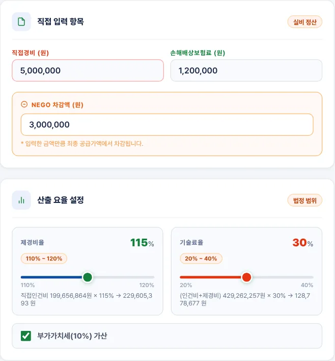
12345- 1직접경비 5,000,000원
- 2손해배상보험료 1,200,000원
- 3NEGO 차감액 3,000,000원
- 4제경비 115%
- 5기술료 30%
| 구분 | 기술등급 | 기간(개월) | 인일수 | 노임단가(원/일) | 소계(원) |
|---|---|---|---|---|---|
| 건축 상주 | 특급기술자 | 12 | 264 | 373,353 | 98,565,192 |
| 기계 상주 | 고급기술자 | 6 | 132 | 310,884 | 41,036,688 |
| 토목 상주 | 중급기술자 | 4.5 | 99 | 295,138 | 29,218,662 |
| 비상주 | 기술사/건축사 | 3 | 66 | 467,217 | 30,836,322 |
| 비목 | 예제 B 계산 | 금액(원) |
|---|---|---|
| ① 직접인건비 | 위 표의 합 | 199,656,864 |
| ② 제경비 | 199,656,864 × 115% | 229,605,393 |
| ③ 기술료 | (199,656,864 + 229,605,393) × 30% | 128,778,677 |
| ④ 직접경비 | 실비 | 5,000,000 |
| ⑤ 손해배상보험료 | 실비 | 1,200,000 |
| ⑥ 협의 조정액 | 차감 | − 3,000,000 |
| 공급가액 | ① + ② + ③ + ④ + ⑤ − ⑥ | 561,240,934 |
| 부가가치세 | 공급가액 × 10% | 56,124,093 |
| 합계 | 천원 미만 버림 | 617,365,000 |
06문제 해결·FAQ
| 증상·질문 | 답 |
|---|---|
| 합계가 0원으로 나옵니다 | 감리기간이 비어 있거나 숫자가 아닌 글자가 들어 있는지 확인합니다. 기간은 숫자와 소수점만 넣습니다. |
| 4.3개월처럼 넣으면 어떻게 됩니까 | 개월 × 22를 반올림합니다(4.3 × 22 = 94.6 → 95일). 안내는 0.5개월 단위이지만 다른 소수도 계산됩니다. |
| 분야가 두 개뿐입니다 | 쓰지 않는 분야의 감리기간을 0으로 둡니다. 금액은 0원이 되지만 배너의 인원 표기는 「상주 3인」으로 남으므로 산출서의 감리원별 내역으로 확인합니다. |
| 전기 분야 건축사보는 어디에 넣습니까 | 입력 칸이 없습니다. 따로 계산해 직접인건비에 더한 뒤 제경비·기술료를 다시 구해야 하므로, 이 프로그램의 합계에 단순히 더하지 않습니다(4-9). |
| 기계 분야 단가가 협회 공표값과 다릅니다 | 세 분야 모두 건설 부문 단가를 씁니다. 기계/설비 부문 단가를 적용하는 계약이면 금액이 달라집니다(4-6). |
| 제경비율을 110% 아래로 내릴 수 없습니다 | 슬라이더 범위가 대가기준 제17조제2호의 110~120%로 고정되어 있습니다. 협의로 줄일 금액은 NEGO 차감액에 넣습니다. |
| 손해배상보험료에도 부가가치세가 붙습니까 | 프로그램은 보험료를 공급가액에 넣은 뒤 10%를 계산합니다. 과세 여부는 계약과 세무 처리 기준으로 확인하십시오. |
| 합계의 끝자리가 000입니다 | 공급가액과 부가가치세를 더한 뒤 천원 미만을 버립니다. 버리기 전 값은 산출서의 공급가액·부가가치세 줄로 확인합니다. |
| 입력값이 사라졌습니다 | 입력값은 저장되지 않습니다. 새로 고치거나 창을 닫으면 초기값으로 돌아갑니다. 결과는 PDF·JPG로 남기십시오. |
| 감리인원 칸의 글자가 잘립니다 | 산출서 「감리인원」 칸은 한 줄만 보입니다. 등급 전체는 아래 감리원별 내역 표에서 확인합니다. |
| JPG 저장이 되지 않습니다 | 「산출서 미리보기」 탭에서 눌러야 합니다. 그림 저장에 쓰는 라이브러리는 인터넷에서 내려받으므로, 오프라인에서 실패하면 인터넷에 연결해 한 번 연 뒤 다시 시도합니다. |
| 매뉴얼 버튼을 눌러도 열리지 않습니다 | 매뉴얼은 인터넷에 연결되어 있을 때만 열립니다. |
| 공사비 요율로 감리비를 구하고 싶습니다 | 비상주 감리(대가기준 제14조제1항, 별표5)는 공공기관 건축사 업무대가 산출기에서 계산합니다(4-4). |
A부록
A1. 예제 입력값
| 항목 | 예제 A(초기값) | 예제 B |
|---|---|---|
| 공사명 / 감리자 / 건축주 | 만민 건축사 신사옥 신축공사 / (주)대성건축사 사무소 / 김만민 | 같음 |
| 작성일 | 2026-10-11 | 같음 |
| 건축 상주감리원 | 고급기술자 · 6개월 | 특급기술자 · 12개월 |
| 기계 상주감리원 | 고급기술자 · 6개월 | 고급기술자 · 6개월 |
| 토목 상주감리원 | 고급기술자 · 6개월 | 중급기술자 · 4.5개월 |
| 비상주 감리원 | 특급기술자 · 2개월 | 기술사/건축사 · 3개월 |
| 제경비율 / 기술료율 | 110% / 20% | 115% / 30% |
| 직접경비 / 손해배상보험료 / NEGO | 0 / 0 / 0 | 5,000,000 / 1,200,000 / 3,000,000 |
| 부가가치세 가산 | 체크 | 체크 |
| 공급가액 | 351,634,741원 | 561,240,934원 |
| 합계(VAT 포함) | 386,798,000원 | 617,365,000원 |
A2. 버전 변경 내역
| 버전 | 내용 |
|---|---|
| Ver-5.0 · v5.0.6 (2026-10-11) | 사용자 매뉴얼 연결 — 탭 막대 「📘 매뉴얼」, 매뉴얼 웹·PDF 공개 · 근거 조항 표기 정정(제경비·기술료 대가기준 제17조제2호·제3호, 손해배상보험료 건축사법 제20조제3항, 배치현황 제출 건축법 시행령 제19조제10항, 건축사법 제19조의3 준용 규정) · 이용방법의 탭 이름 정정 · 금액 계산을 정수 연산으로 변경(일부 입력에서 1원·1,000원 적게 표시되던 문제) |
| Ver-5.0 · v5.0.0~v5.0.5 (2026-09) | 디자인 통일(헤더·탭 막대·요약 스트립), A4 산출서 1매 고정, JPG 저장, 오프라인 캐시 개선 |
A3. 용어
| 용어 | 뜻 |
|---|---|
| 상주감리 | 건축분야의 건축사보 한 명 이상을 전체 공사기간 동안 배치하여 품질관리·공사관리 및 안전관리 등에 대한 기술지도를 하는 감리(감리세부기준) |
| 비상주감리 | 공사감리자가 수시로 또는 필요할 때 공사현장을 방문하여 확인하는 감리(감리세부기준) |
| 건축사보 | 건축사법 제2조제2호에 따른 건축사보. 기술사사무소·건설엔지니어링사업자 등에 소속된 해당 분야 기술계 자격 취득자 등을 포함(건축법 시행령 제19조제5항) |
| 실비정액가산식 | 직접비(직접인건비 + 직접경비) + 제경비 + 창작 및 기술료로 대가를 산출하는 방식(대가기준 제17조) |
| 직접인건비 | 당해업무에 직접 종사하는 건축사등의 인건비 — 투입 인원수 × 노임단가 |
| 제경비 | 직접비에 포함되지 아니하는 간접비 — 직접인건비의 110~120% |
| 창작 및 기술료 | 기술의 사용 및 기술축적을 위한 대가와 이윤 등 — (직접인건비 + 제경비)의 20~40%. 화면 표기는 「기술료」 |
| 인일수 | 감리원 1인이 1일 투입되는 양(man-day). 프로그램은 1개월을 22인일로 환산 |
| 공급가액 | 부가가치세를 더하기 전 금액 |
| NEGO 차감액 | 계약 협의로 공급가액에서 빼는 금액(산출서 표기 「협의 조정액」) |